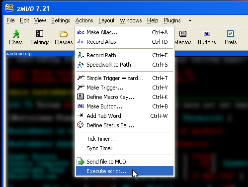
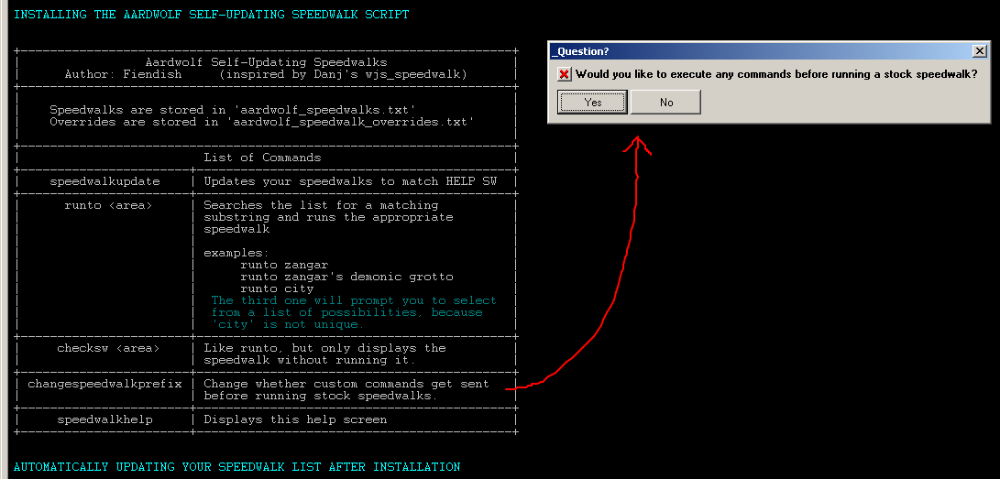
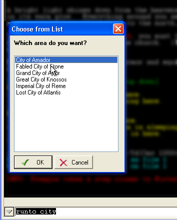

Fiendish's Super Amazing Self-Updating Speedwalk Script
For zMUD
Inspired by Danj's wjs_speedwalk script.
Tested to work in zMUD 7.21 on Windows XP. Not guaranteed to work in other versions or system configurations.
IMPORTANT BEFORE YOU DOWNLOAD!
The major functionality of this script is now built into the MUD as of August 02, 2008. If you have no interest in overriding any of the speedwalks, just use that instead of this script. If you do plan to override speedwalks, then this script is for you.
New in the November 12, 2010 update:
- Areas have been changing names (Thanks for the heads up, Accora). The Realm of Evil Heroes no longer exists, and so isn't a good string to check for when finding the end of the
areas list. This check has been replaced with one for A Clearing in the Woods.
- Edit: Now replaced with The Realm of Infamy. Thanks to Tlamacazqui for pointing out my mistake.
New in the August 03, 2008 update:
- Should now accomodate the new mudside runto command. If you try to run to one of the 'find' locations in Aylor, it passes the keyword for your selection to the mud.
- The script should also work now for people with colors turned off. Why anyone would play without color is beyond me, but it should work anyway.
New in the July 03, 2008 update:
- Fixed a minor bug in the updater that was preventing it from capturing Wobbly Woes of Woobleville. Thanks Oldham.
New in the June 29, 2008 update:
- Changed the updater to use the speedwalk command instead of the now-defunct contsw helpfile.
New in the March 23, 2008 update:
- You can now use zMUD aliases in your override speedwalks. This is a very small change that uses #EXEC instead of #SEND. Thanks to Neryx.
New in the March 17, 2008 update:
- With any luck the obscure zMUD forgetting where to put files bug should be fixed. A result of this change is that now files are put into your Aardwolf profile
subfolder instead of the main zMUD directory. Thanks to Danj.
New in the March 15, 2008 update:
- Fixed handling of speedwalks with multiple colons in the name.
- Seems to fix some strangeness where Deadlights wasn't being captured from the help file.
- There is a new speedwalk override file put in your zMUD directory that will override any stock speedwalks from the help file.
If you want to use portals or faster walks, you can now put them in "aardwolf_speedwalk_overrides.txt". The formatting must be the same as in "aardwolf_speedwalks.txt"
- There is now a changespeedwalkprefix command that allows you to add a prefix group of commands to all non-overridden speedwalks. Use this if you want to run from
your manor or clan hall and want to exit to Aylor before starting the runs. Overridden speedwalks do not get prefixed, so you'll need to do those yourself in the overrides
file. This command is listed in the speedwalkhelp display. Thanks to Eclaboussure.
What this script does:
- Provides you with a dynamic speedwalk runner that will take you to any area listed in the publicly available speedwalk list
- Will update the stored speedwalks by itself at your command
- Make you never have to remember area keywords
Download the script here: Self-Updating Speedwalk Script
IF YOU DO NOT INSTALL THIS SCRIPT AS DESCRIBED BELOW YOU WILL BE SORRY.
------------ BEGIN INSTRUCTIONS ------------
This script installs a class named "Speedwalks" which contains a disabled class called "speedwalkinternals"
and aliases "runto", "checksw", "speedwalkhelp", "changespeedwalkprefix", and "speedwalkupdate".
It also creates two files in your zMUD Aardwolf profile directory called "aardwolf_speedwalks.txt" and "aardwolf_speedwalk_overrides.txt"
If any of your scripts conflict with these names, they must be removed first or everything will break.
To install the script go to the Actions menu in zMUD and choose "Execute script..."
Do not think that you know how to do it better. Do not think that you can import the script in any other way.
You MUST use execute script.

Then select the text file containing the script, in this case Speedwalks.txt, and click Open

The script then installs and updates itself. Give it a moment to finish.
A list of the possible commands will appear while the script is installing.
A box will pop up asking if you want to execute commands before running stock speedwalks.
That is the "changespeedwalkprefix" command which can be changed at any time.

Now all you have to do is go to recall and type "runto <area substring>" and you're off!
If you enter an ambiguous substring, the script will prompt you to choose which of the possible matching areas you want to run to.
